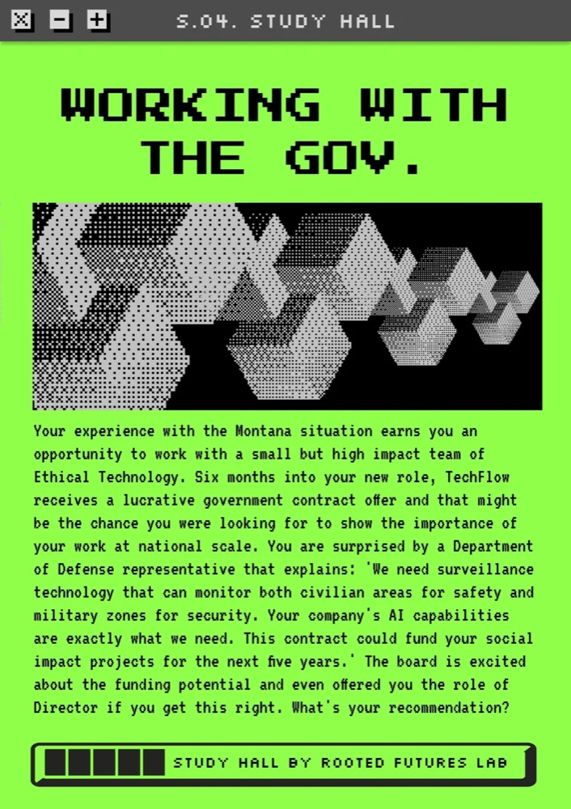
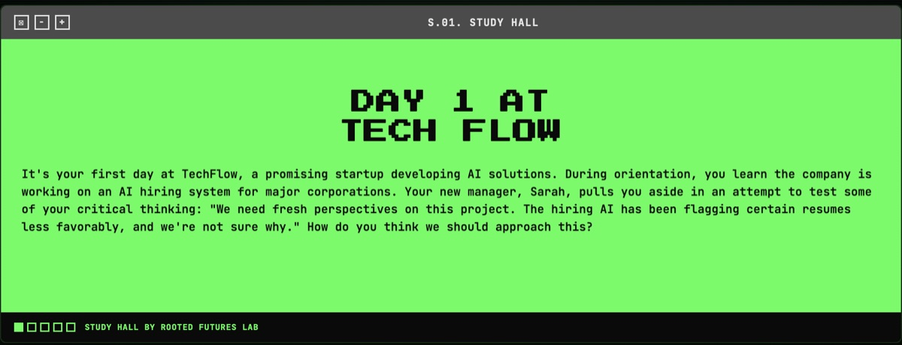
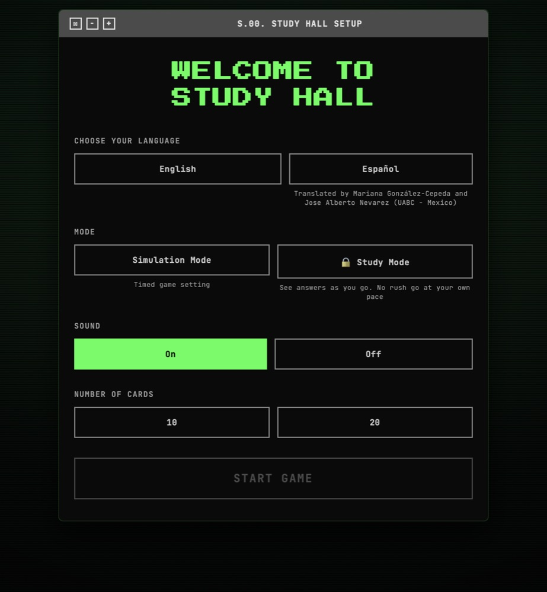

Fellowship
Rooted Futures Lab Fellowship
I am designing and developing the web version of Study Hall, a card game that gets college students thinking about environmental justice in technology by putting them inside the decisions.

01 · The program
Study Hall
Study Hall is a peer learning program at Rooted Futures Lab where STEM students work through environmental justice in technology outside of the classroom. Student facilitators get stipends, training, and resources so they can lead the discussions themselves.
The conversations run on scenarios instead of lectures, which is what pulls out the values, the tradeoffs, and the power dynamics behind how technology actually gets built. The whole thing is built on the idea that students learn this best from each other.
About the program
02 · The game
Study Hall, on the web
You start as an intern at a tech startup and move forward twenty years into positions of real power. The scenarios get harder as you climb, because the decisions get bigger. Each one gives you five options and asks which is closest to what you think environmental justice in technology actually means.
There is a timer on every answer, since nothing in this industry waits. You can call an advisor if you are stuck, but each advisor carries their own bias, so the help is never neutral. It runs in English and Spanish, in a timed simulation mode or a self paced study mode.
Play the game